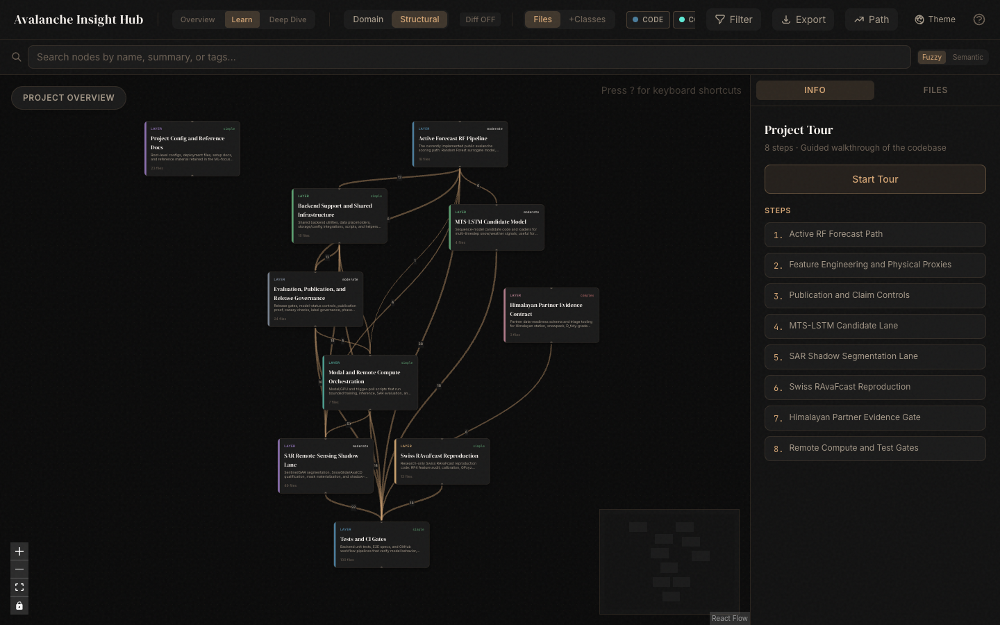
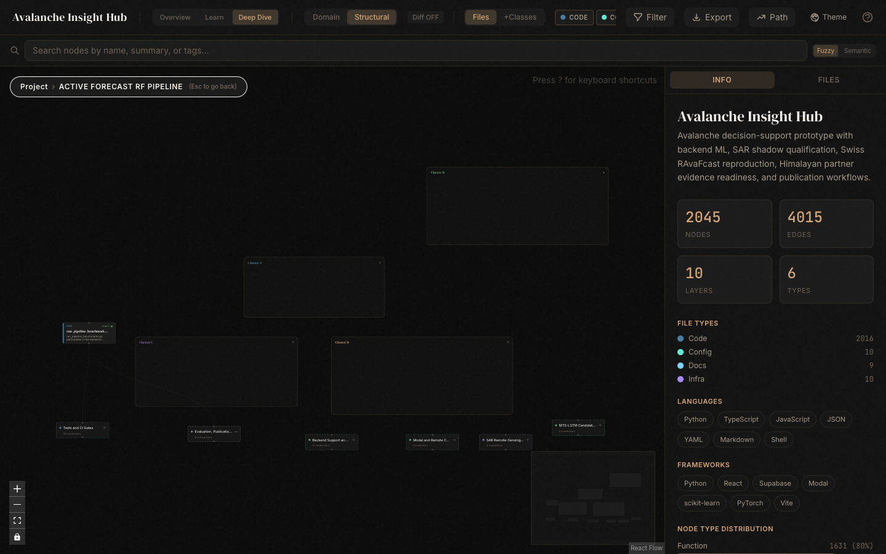
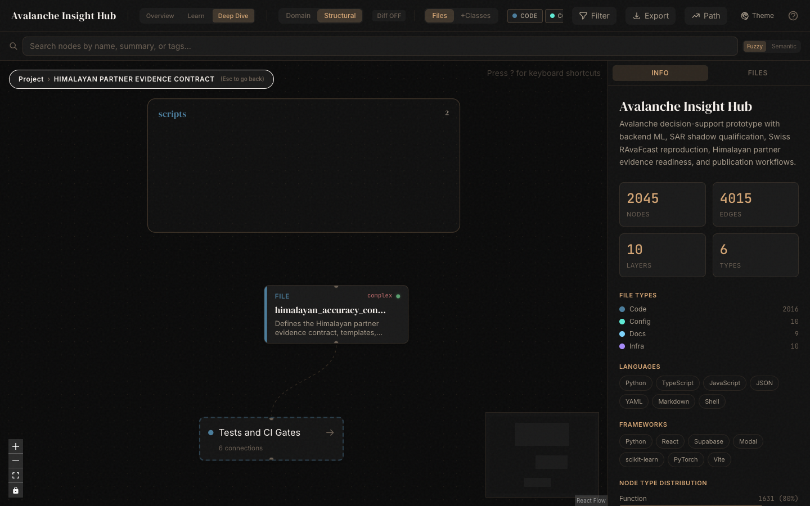
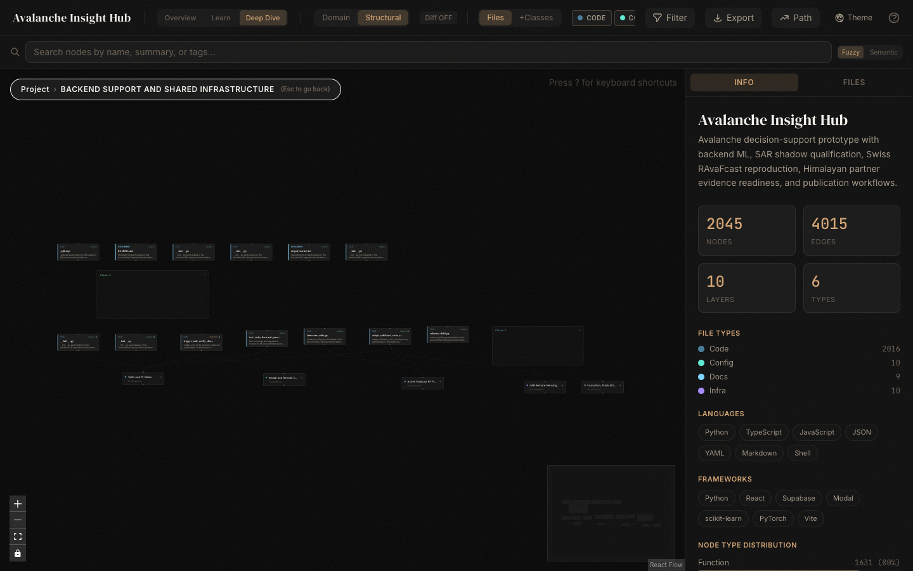
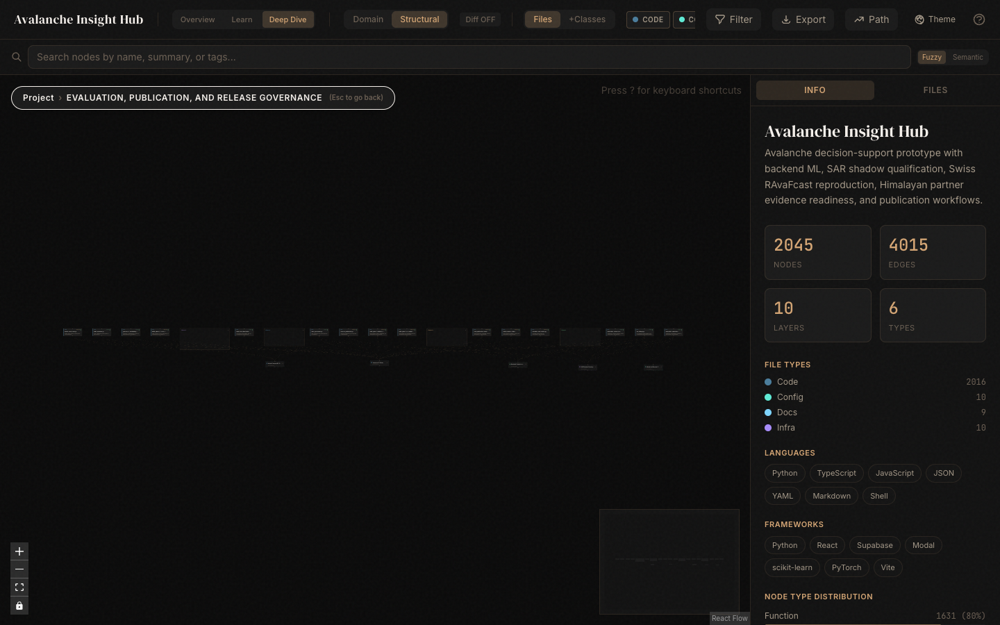
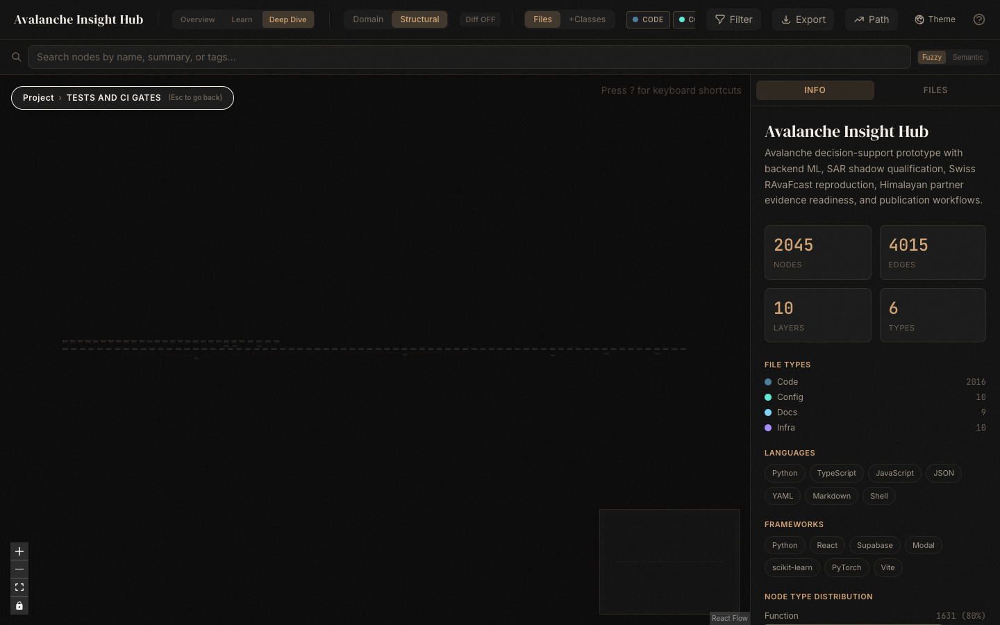
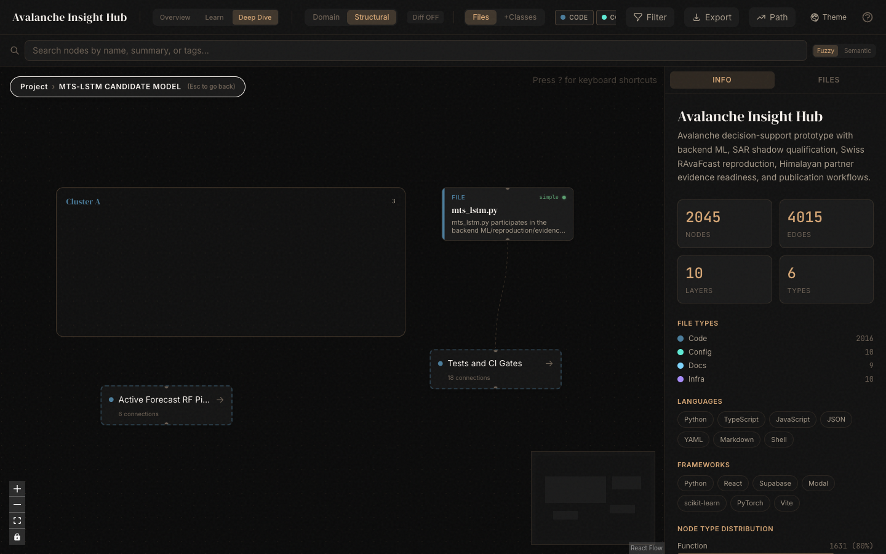
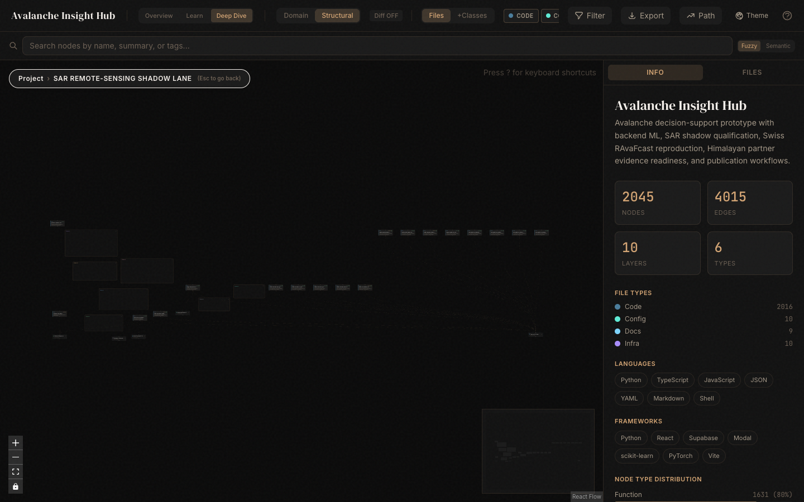
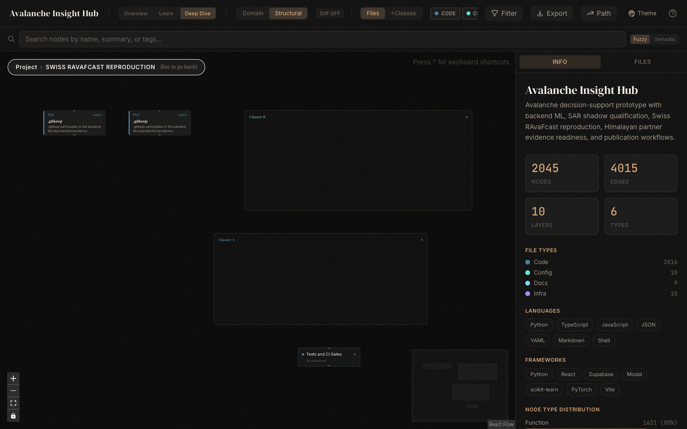
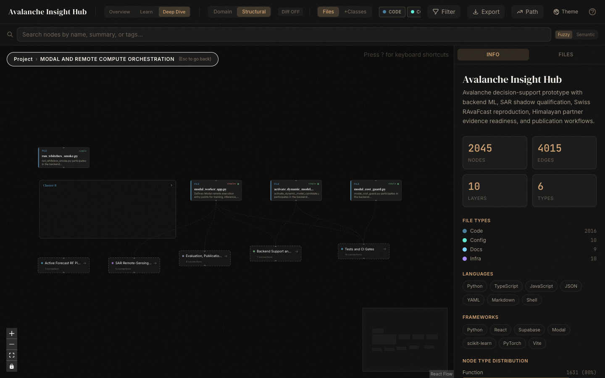

For beginners
No code reading required; every technical term is mapped to a simple operational meaning.
A beginner-friendly guide to what the Understand Anything graphs show, how the current model stack works, and what evidence is still needed before Himalayan accuracy can be claimed.
This deck explains the system as three connected parts: a database that stores facts, machine-learning models that estimate risk, and evidence gates that decide what may be shown or claimed.
No code reading required; every technical term is mapped to a simple operational meaning.
The deck keeps label quality, validation data, SAR limits, and local holdout gates visible.
The website is not just a map. It is a governed evidence system: store facts, run models, then publish only what passes the right gates.
Supabase/Postgres stores forecast runs, grid cells, events, model status, evaluation records, scientist reviews, and daily verification records.
Random Forest is the active structured scorer; MTS-LSTM, SAR segmentation, and Swiss RAvaFcast remain gated research or candidate lanes.
Publication, SAR, Himalayan partner, and holdout gates stop unsupported claims even when a model or graph looks promising.



Understand Anything turned the repo into a visual map: 2,045 nodes, 4,015 edges, and 10 ML/backend layers for the structural view.
Files, functions, classes, pipelines, config, and docs.
Relationships that show how code and evidence connect.
Grouped ML/backend workstreams, not random file lists.
The graph is a navigation aid. It does not prove scientific accuracy by itself; it helps reviewers see where the implemented evidence and remaining gates live.
The database is the system ledger: it records forecast products, event evidence, model state, evaluation runs, and scientist review decisions.
forecast_runs, forecast_run_hours, forecast_grids, and publication events record what was generated and published.
avalanche_events, field reports, outcome labels, and feature logs form the evidence trail behind model evaluation.
model_status, evaluation_runs, scientist_validation_reviews, and daily verifications keep model state and human checks visible.


A beginner can read the data path as a chain: inputs become a model run, the run writes grid cells, the public map reads the published grid, and scientists review exceptions.
Weather, terrain, snowpack proxies, event history, and model status.
Backend scoring creates a dated run with lineage and metadata.
Cell-level risk values become the map surface and bulletin context.
Scientists and operators inspect cases, actions, and daily verification records.
Himalayan partner evidence intake is still CSV, source-manifest, and CLI based. The current UI supports product and review concepts, but the full partner evidence package is not yet a web form workflow.
The system deliberately separates active, candidate, shadow, research, and evidence lanes so one promising result does not become an unsupported public claim.
Random Forest with terrain, weather, and snowpack features.
MTS-LSTM for future temporal learning.
SAR shadow plus Swiss RAvaFcast RF4, GPxyz, and refined aggregation.
Himalayan partner evidence; production_scoring_allowed=false; himalayan_accuracy_claim_allowed=false.
Random Forest is a practical baseline: it combines many simple decision trees so the final estimate is less fragile than one hand-written rule.
Terrain, weather, snowpack proxies, historical context, and freshness cues become structured columns for the model.
Each tree learns a different split pattern; the ensemble combines them to reduce dependence on a single brittle rule.
The score must still pass model-status, lineage, freshness, and confidence controls before it is safe to publish.
Good prediction is not only the top class. The system also needs probability quality, explanation traces, and publication proof.
Calibration checks whether a probability behaves like a probability. If the model says 70% risk often, roughly 7 out of 10 comparable cases should behave that way over a valid evaluation set.
TreeSHAP-style explanations and feature summaries help reviewers see why a cell moved up or down, instead of treating the model as a black box.
The current deck keeps explanation and calibration as evidence controls, not as magic. If a run falls back to heuristic explanation, that must remain visible.

Avalanche danger changes over time. A sequence model can learn recent weather and snowpack progression, but it needs enough reviewed local sequences before promotion can be discussed.
Random Forest sees a structured snapshot. MTS-LSTM can learn a short story over time: wind loading, snowfall, warming, settling, and changing instability.
Better use of multi-day weather and snowpack sequences.
Candidate lane only; it needs reviewed data, benchmark gates, and drift checks before activation.

Satellite radar can reveal avalanche deposits in places with sparse ground reports, but this lane remains shadow-gated because transferability and false positives are real scientific risks.

Sentinel-1 can monitor large remote areas through cloud cover.
Wet snow, crevasses, shadow/layover, small events, and scene transfer can distort detections.
AvalCD and SnowSlide evidence are valuable, but SAR stays out of public scoring until held-out gates pass.
European datasets and papers improve the methodology: label discipline, common danger language, spatial interpolation, aggregation, and remote-sensing caution.

Shared 1-5 danger language.
D_tidy labels and Random Forest baseline discipline.
Swiss RAvaFcast RF, GPxyz, and refined aggregation.
SAR transfer limits, wet-snow false positives, small misses, shadow/layover.
SAR change-detection benchmark context.
Method transfer only; Himalayan proof needs local reviewed data.
The European work gives a strong blueprint. Himalayan readiness still needs local reviewed labels, station coverage, event truth, warning-region geometry, and an independent holdout.
Swiss and European evidence can improve the playbook, feature discipline, and validation gates. It cannot substitute for Himalayan station X/Y/Z metadata, D_tidy-grade local labels, event evidence, polygons, and a leakage-checked holdout.
This is the practical input list partners and scientists must fill before local claims can advance.
station_metadata.csv
weather_station_observations.csv
snowpack_profile_features.csv
danger_labels_and_bulletins.csv
historical_avalanche_events.csv, terrain_ates_runout_validation.csv
warning_region_polygons.csv, independent_himalayan_holdout.csv
source_ref, license_scope, review_status, reviewer_id, and reviewed_at.The technology stack is easier to understand when each tool is tied to a simple job.
Builds the website screens and packages the frontend quickly.
Stores database tables, auth, storage, functions, and geospatial map facts.
Runs data preparation, Random Forest, calibration, evaluation, and reports.
Supports MTS-LSTM candidate models and SAR segmentation experiments.
Runs bounded heavier compute jobs outside the public click path when authorized.
Creates visual codebase maps so reviewers can see how the system fits together.

The path forward is practical: collect local evidence, run triage, validate with scientists, then decide whether a narrow Himalayan pilot is justified.
Avoid saying: Himalayan accuracy is established, SAR is activated for public scoring, or the platform replaces regional avalanche forecasters.
Evidence-governed MVP V2 with a live technical proof region, active Random Forest baseline, research-only Swiss and SAR lanes, and a Himalayan partner evidence path.